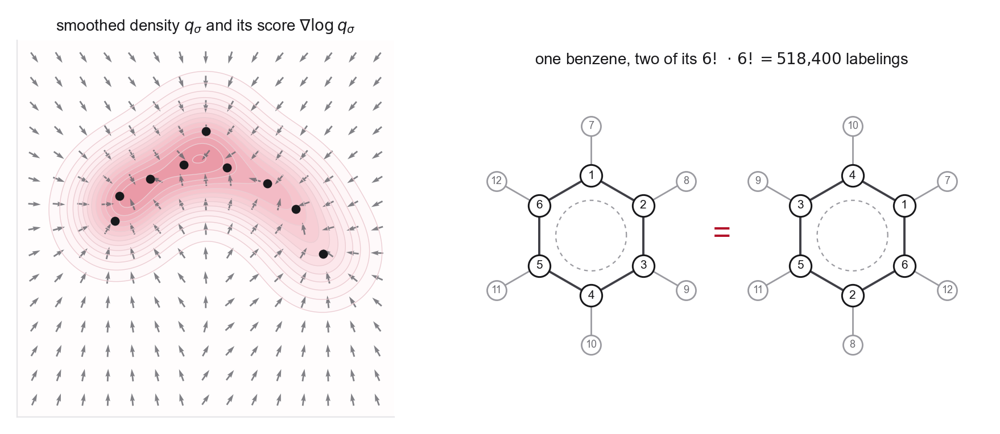

Concepts you need
- Empirical distributions and Dirac deltas
- Pushforward of a distribution through a map
- Gaussian mixtures and softmax-style weights (for the smoothing part)
- Group actions, and the difference between invariance and equivariance
- Cartesian vs fractional coordinates for periodic cells
If you get stuck
- MIT notes, Section 1.3 for generation as sampling from a data distribution
- DMol Chapter 9 for how molecules become tensors (atom order, coordinates, graphs)
- DMol Chapter 10 for precise invariance and equivariance definitions, with the transformation laws written out
Source note. Original problem, with framing from MIT notes Sections 1.3 and 2.1 and DMol Chapters 9, 10, and 15.
This first problem is meant to slow down the phrase "the data distribution." In images, the representation is often treated as a vector by default. In molecules and materials, the representation already encodes choices about atom order, coordinates, periodicity, chemical identity, and physical symmetry.
\[
\widehat p_{\mathrm{data}} = \frac{1}{N}\sum_{i=1}^{N}\delta_{z_i},
\qquad X_0\sim p_0,
\qquad X_1 = \psi_{0,1}(X_0).
\]
Here \(z_i\) is a molecule, conformer, crystal, or other scientific object after choosing a representation, and \(\psi_{0,1}\) is a generative map from a simple base distribution to the target distribution.

- Explain why \(\widehat p_{\mathrm{data}}\) is not a smooth density on \(\mathbb R^d\). What becomes ill-defined if we try to compute \(\nabla_z \log \widehat p_{\mathrm{data}}(z)\) directly?
- One standard fix is to smooth. Define \(q_\sigma = \widehat p_{\mathrm{data}} * \mathcal N(0,\sigma^2 I)\). Write \(q_\sigma\) explicitly as a mixture of Gaussians and show that \[ \nabla_z \log q_\sigma(z) = \frac{1}{\sigma^2}\sum_{i=1}^{N} w_i(z)\,(z_i - z), \qquad w_i(z) = \frac{\exp\!\left(-\|z-z_i\|^2/2\sigma^2\right)}{\sum_j \exp\!\left(-\|z-z_j\|^2/2\sigma^2\right)}. \] Interpret the result. Where does the score point, and what happens as \(\sigma\to 0\) and \(\sigma\to\infty\)? Keep this formula, since it returns in Week 2 as the denoising score matching target.
- Write the mathematical statement that the generated distribution matches the data distribution using pushforward notation. Use \((\psi_{0,1})_{\#}p_0\) in your answer.
- For a molecular configuration \(R=(r_1,\ldots,r_n)\in\mathbb R^{3n}\), state the desired transformation law for a coordinate velocity field under translations, rotations, and permutations of identical atoms.
- Count the redundancy that permutation symmetry creates. For benzene, with six carbons and six hydrogens treated as two classes of identical atoms, how many distinct points of \(\mathbb R^{36}\) describe the same physical molecule under atom relabeling alone? What does this number imply for a model that must assign equal density to every copy, and what are the two standard responses?
- Suppose the density is invariant under a group action \(g\), so \(p(gR)=p(R)\). What transformation law should you expect for a score field \(s(R)=\nabla_R\log p(R)\)? What about a velocity field \(u_t(R)\)?
- Give a minimal representation for a periodic crystal that includes atom types, fractional coordinates, and the unit cell. Explain why fractional coordinates are often cleaner than Cartesian coordinates when the lattice is changing.
Why this matters. This problem makes the class confront the gap between clean \(\mathbb R^d\) theory and scientific data. That gap is exactly where equivariant networks, periodic coordinates, graph structure, and chemically meaningful constraints enter.